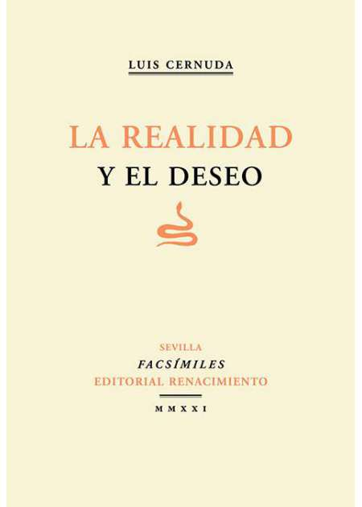
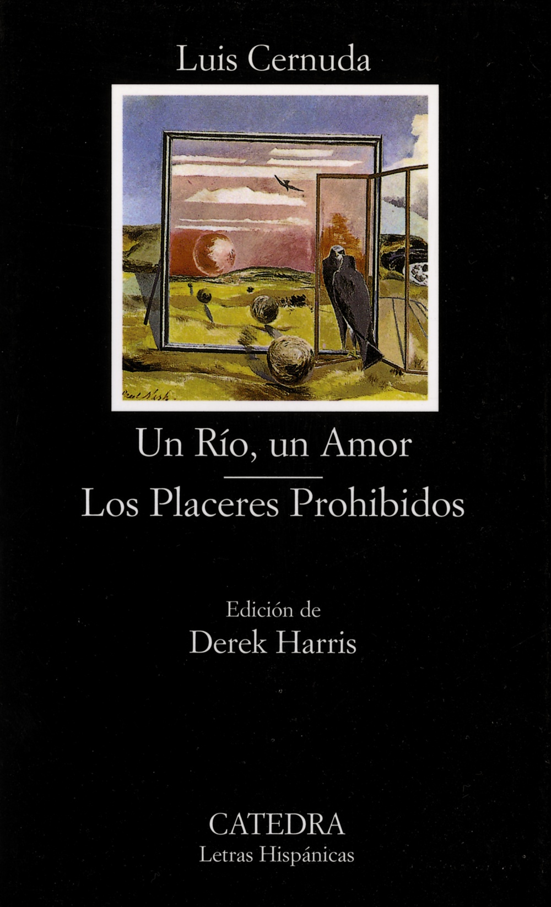
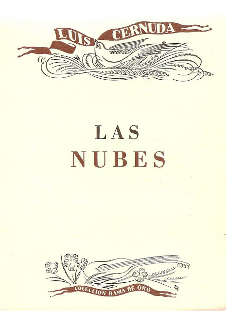

Luis Cernuda
Libros
La realidad y el deseo

Poemas:
Si el hombre pudiera decir
Poema recitado:
Los placeres prohibidos

Poemas:
Donde habite el olvido
Poema recitado:
Voz de Luis Cernuda
Las nubes

Poemas:
¿Mi tierra?
Peregrino
Poema recitado: